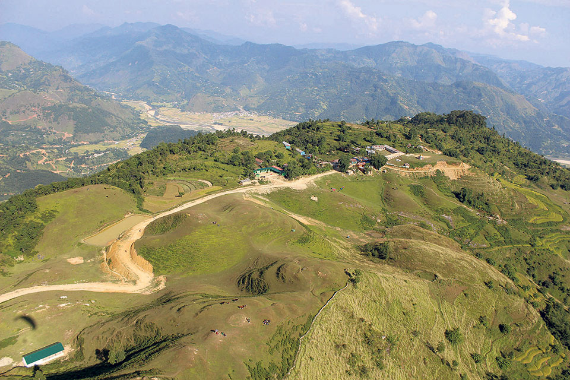
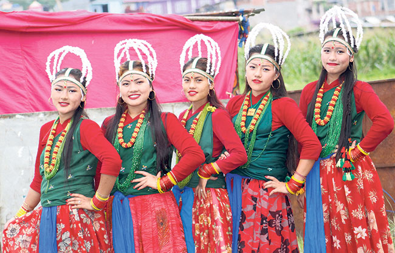

Destination Syangja
You can immediately download SYANGJA, Nov 26: Winter has hit the town and we can notice the deposition of snow in the mountains. Ripped buckwheat and paddy have changed the terrace of Syangja village into a sea of cereals. Blessed with diverse natural beauty, Syangja has a huge potential for tourism. The presence of natural and cultural heritages has added to promoting adventure and religious tourism in the district. If authorities concerned and stakeholders work effectively, the district can be developed into one of the best tourist destinations of the country. Some of the major tourist destinations in the districts are: Sworek Maidan, Kaligandaki ‘A’ Hydropower Project, Nuwakot Durbar, Aadhi Khola River, Chandithan Temple and Aalamdevi Temple.
Destination Syangja
SYANGJA, Nov 26: Winter has hit the town and we can notice the deposition of snow in the mountains. Ripped buckwheat and paddy have changed the terrace of Syangja village into a sea of cereals. Blessed with diverse natural beauty, Syangja has a huge potential for tourism. The presence of natural and cultural heritages has added to promoting adventure and religious tourism in the district. If authorities concerned and stakeholders work effectively, the district can be developed into one of the best tourist destinations of the country. Some of the major tourist destinations in the districts are: Sworek Maidan, Kaligandaki ‘A’ Hydropower Project, Nuwakot Durbar, Aadhi Khola River, Chandithan Temple and Aalamdevi Temple.

Suntalabari
Suntalabari is a place named after orange orchards. There are more than 16,000 plants of oranges. That is why the place has been named Suntalabari. The place is located in ward number 4 of Waling Municipality. Suntalabari is 1,185 meters above sea level. There are 32 houses out of which 15 provide homestay services for the visitors. Autumn is the best season to visit Suntalabari. Tourists can enjoy natural orange juice in this place. Suntalabari adopted the homestay business in 2069 BS under the leadership of Captain Dil Bikram Gurung. The place is also famous as the home town of famous folk singer, Sarmila Gurung. ‘Salaijo’, ‘Jhyaure’, and ‘Sorathi’ are the native music and dance forms of Suntalabari. Apart from culture and natural beauty, the place is equally famous for adventure tourism. The place offers various adventure sports like canyoning and hiking.